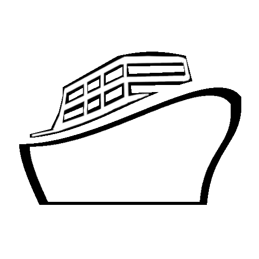

LazyStarter. A quick web project scaffolder built for the Summer of Shipping in Python with a CLI.
GitHub | Summer of Shipping

Holland America Line. Web scraping utilities and an API to save dozens of man-hours over a three month project.
Scraper GitHub | Django API GitHub | Current Holland America Site
Fluke Biomedical. Automated content porting and scrubbing to save another couple dozen man-hours.
Current Fluke Site | App
I'm currently enrolled in the UW Graduate Certificate in Software Design & Development.
I've covered structures such as algorithm analysis, binary trees, linked lists, file I/O, and development processes.
Soon, I'll be moving in to more advanced algorithms and security topics.